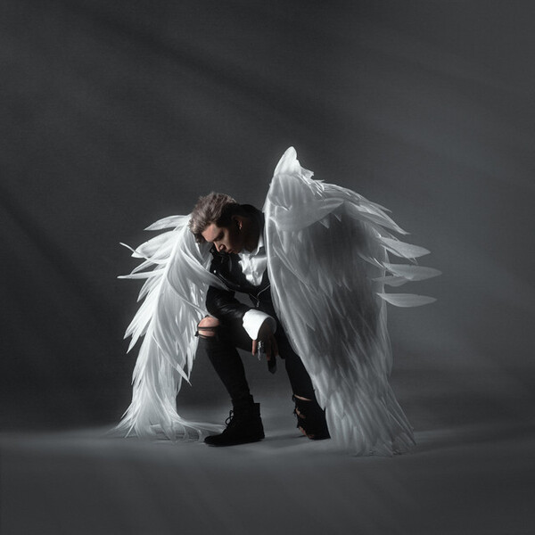

Playingtheangel – рэп-исполнитель.
Свой творческий путь, Юрий Перфилов начал в 2016 году с объединения, в которое входили его товарищи, среди которых так же был Pyrokinesis.
Pyrokinesis неоднократно говорил о Юре, как о талантливом человеке, долго находившемся в тени.
Особенностью искусства является специфическая манера подачи текстов.Он грамотно сочетает грубые слова с нежной лирикой, иногда пользуясь несовместимыми вещами, которые в итоге звучат очень атмосферно.
За годы своего творчества Playingtheangel выпустил 8 студийных альбомов, в которые вошло около 100 композиций.
Помимо песен из альбомов, у Юрия есть синглы. Всего их у Юрия 16. В творчестве Юрий насчитывается только один видеоклип на песню "Фудзи".

Самым популярным альбомом в творчестве, является альбом «Побочки», который состоит из 13 песен.
Самый популярный сингл в творчестве – «В бензиновой луже».
Концерт проходил в Томске 11 апреля и начинался в 19:00. Место в котором проводилось данное мероприятие называется Рок-бар «Варяг».
Сам рок-бар представлял собой довольно маленькое помещение, в дополнении ко всему он был подземным. Но несмотря на это, оформление зала и сцены было располагающим. На концерт пришло не так много людей, около 200 человек.
Организация концерта: что касается данного пункта, то впечатления складываются только положительные. Во- первых, мероприятие не было задержано, что не скажешь, например о концерте Три дня дождя.
Возможно, данной задержки не было, по причине того, что на концерт пришло не так много людей. Во-вторых, не было давящей толпы при входе на концерт как обычно это бывает, потому что за этим следили.
На самом концерте Юрий выступал не один, а с девушкой, которую зовут Лиза. Она играла на различных музыкальных инструментах, виртуознее всего на скрипке, которая потрясающе дополняла данные песни.
В середине концерта вышел специальный гость – Рэйди.
В целом атмосфера концерта была очень приятной и располагающей. Юрий взаимодействовал с аудиторией по максимуму.
Стойки микрофона были украшены белыми и алыми розами. Эти розы были подарены аудитории.
{kind=link}
{kind=link}
{kind=link}